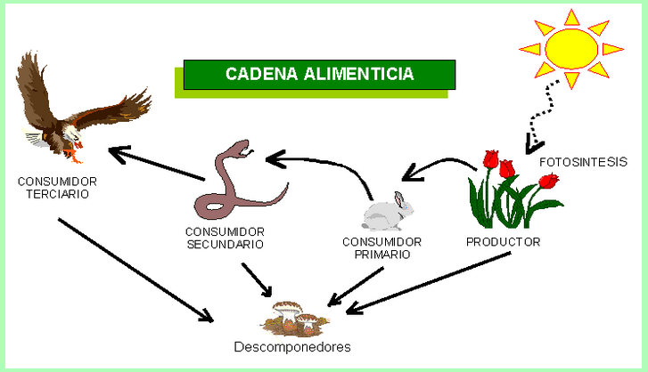

.png)
Ecosistema.
El ecosistema es la unidad de estudio de la ecología.
Se estratifican en cierto grado, puede ser verical, temporal u horizontal:
Componentes de un ecosistema
Componentes funcionales de un ecosistema
La radiación solar que atraviesa la atmósfera y que se absorbe en la superficie terrestre se utiliza en diferentes procesos que constituyen los componentes funcionales.
Las plantas transforman la luz solar en energía química por medio del proceso llamado fotosíntesis, para después utilizarla en el proceso de respiración por las plantal, con el fin de transformarla en energía de trabajo.
Cadenas alimentarias

Las plantasl u organismos autótrofos pertenecen al primer nivel trófico, los herbívoros al segundo nivel, los carnívoros al tercer nivel y asi sucesivamente.
Así ,la secuencia general de quién se come a quién se llama cadena alimentaria y nos muestra cómo se transfiere energía de un organismo a otro y cómo fluye a través de un ecosistema.
En la naturaleza se pueden osbervar los eventos ciclicos, biogeoquímicos, etc
En la naturaleza se pueden osbervar los siguientes eventos ciclicos:
De esta forma el aire y el agua conservan la atmósfera terrestre a una temperatura relativamente constante, indispensable para los desarrollos ecológicosy estabilidad del planeta.
Informacion sacada de: Libro de Ecologia y medio ambiente , Maria Eugenia Mendez Rosales, 1° edicion, 2015 D.R Book Mart, S.A de C.V